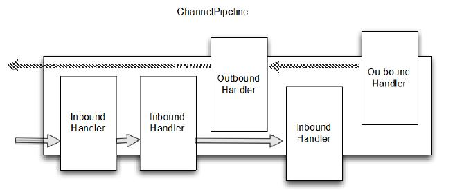
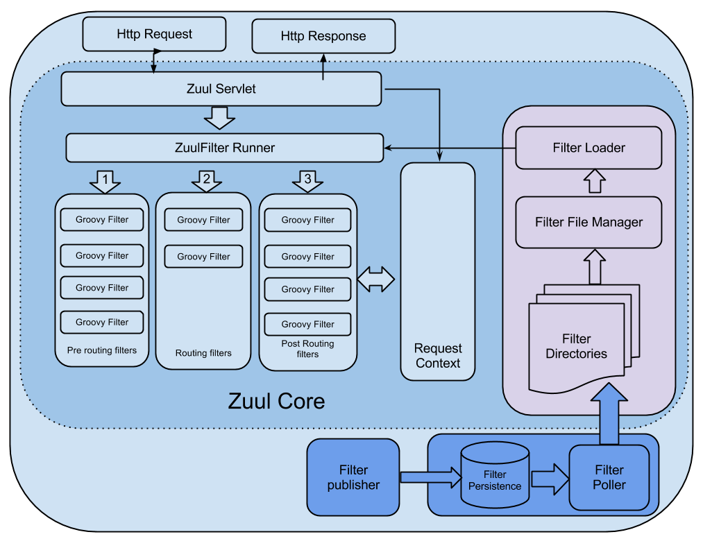
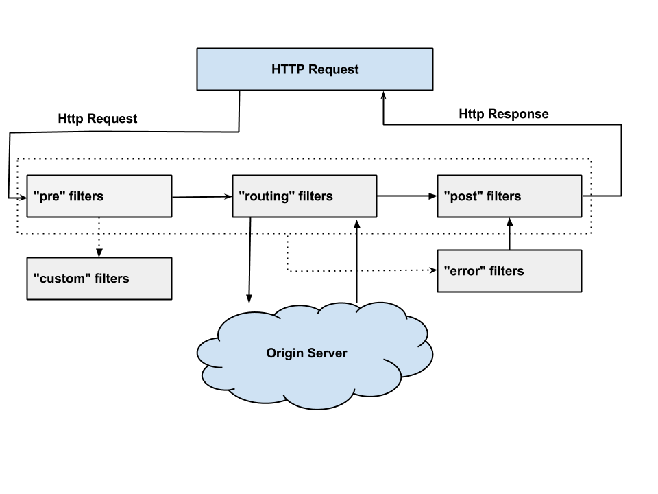

管道模式的妙用
Posted on 二 09 6月 2020 in Tech
GoF 的大作 “设计模式：可重用面向对象软件的基础”是软件工程界中的不朽名著，模式是人们用来讨论问题和解决方案的。 模式记录了那些重复出现的问题，成因和相应的解决方案。
Christopher Alexander 在模式语言中对模式的定义如下：
每个模式都是一个法则，由三部分组成，它表现为一种特定的上下文， 一个问题和一个解决方案之间的关系。
回顾一下管道模式，在计算机世界最熟悉的莫过于一条竖线，将上一条命令的输出和下一条命令的输入联系了起来，妙用无穷。
例如，找出spring 框架中代码行数最多的10个文件
find . -type f -name *.java| grep -v "src/test" | xargs wc -l | grep -v " total" |sort -n |tail -10
- 查找 java 文件
- 过滤掉测试文件
- 统计文件行数
- 过滤掉 wc -l 输出的 “n total” 行
- 按每一行开头的数字排序
- 找出最大的11 条
- 找出最前面的10条
在一条管道里可以做什么？能做的事可太多了：
- 过滤
- 转换
- 排序/比较
- 限定
- 等等
应用： * Web 应用常用的拦截器/过滤器，在请求被处理之前和之后拦截并操作一个请求和它的响应。 javax.servlet.Filter, 在Spring 中把它扩展成 Filter Chain
- Netty 中大量应用的 channel pipeline

- JDK stream API
int sum = widgets.stream()
.filter(b -> b.getColor() == RED)
.mapToInt(b -> b.getWeight())
.sum();
- Spring integration pipeline 中的若干组件
- 通道 channel
- 过滤器 filter
- 转换器 transformer
- 路由器 router
- 切分器 splitter
- 聚合器 aggregator
- 服务激活器 service activator
- 通道适配器 channel adapter
-
网关 gateway

Zuul 中定义了4种过滤器 1）pre 2）route 3）post 4) error
